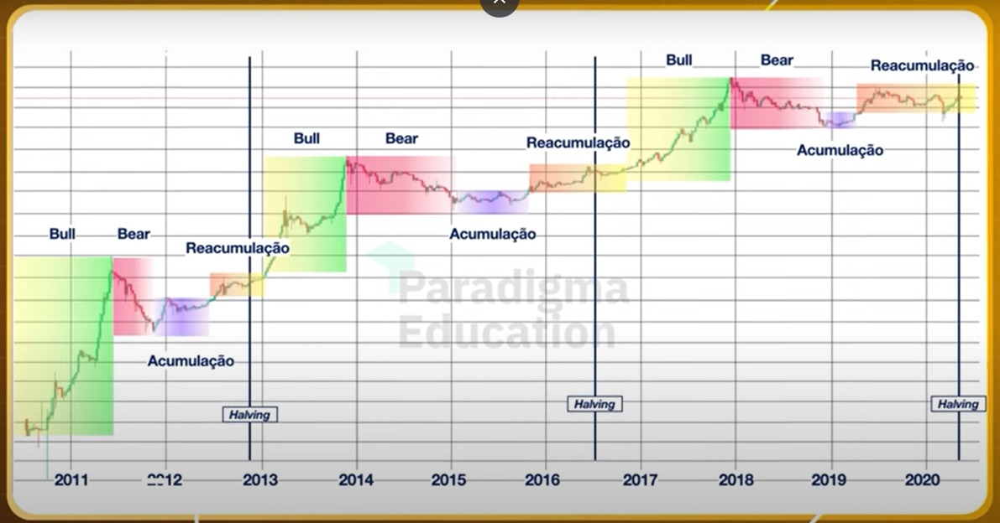

HALVING
Halving é um período em que o bitcoin dificulta a sua mineração e a sua produção reduz pela metade, isso faz com que seu preço aumente significantemente. Uma estimativa prevê que até 2030, 98% dos bitcoins existentes serão minerados, por esse motivo, o halving é de extrema importância. Os últimos ocorreram em 2012, 2016, 2020 e, agora, em 2024.
A imagem mostra os períodos em que o halving aconteceu, especialistas gostam de usar estações do ano para demonstrar o período em que a cripto está.
- Primavera: A primavera é o período de ascensão, é o período em que ocorre o Halving, é como na natureza, do mesmo jeito que as flores desabroxam e começam uma nova fase, o BTC ressurge.
...
- Verão: O verão é o período de em que ocorre a plenitude, é o apice, esse é o momento em que muitas vezes ele atinge o seu máximo.
...
- Outono: É o período de reflexão, quando os investidores pensam melhor e agem de maneira mais "segura", é uma fase que ocorre oportunidades para os demais investidores por seu preço.
...
- Inverno: É um período de descanso e preparação para a próxima primavera, proporciona uma queda dos preços e oprtunidade de investimentos.